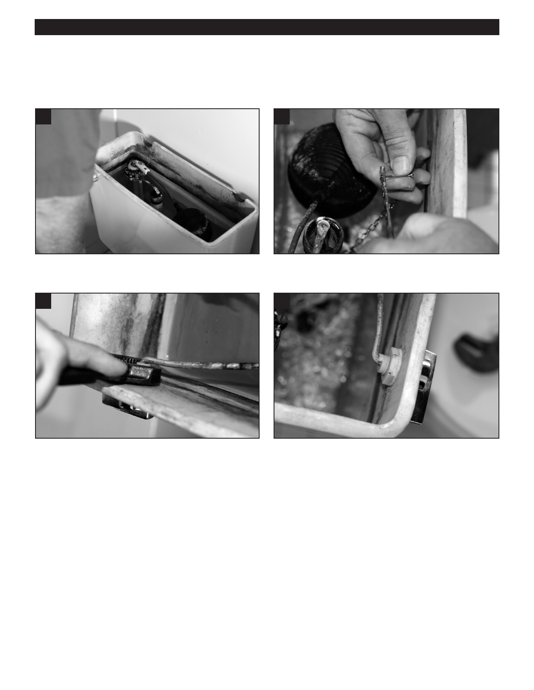

PA RT I C I PA N T R E S O U R C E G U I D E
Fixing a Toilet Handle
How-to Steps
1
2
1. Remove the tank cover.
2. Unhook the chain from the lift bar.
3
7
3. Using an adjustable wrench, remove the nut that holds
7. Put the handle back and secure it with the nut. This time,
the handle in place. (To remove the nut, turn clockwise—
turn the wrench counterclockwise to tighten the nut.
the nut has reversed threads.)
8. Hook the chain to the lift bar.
4. If the nut and/or handle are worn, replace them.
9. Flush the toilet and check the operation of the handle.
5. Clean the handle and nut with a vinegar-soaked soft
bristle brush such as a toothbrush.
6. Clean the handle opening in tank.
58